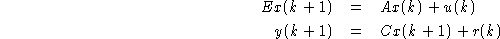
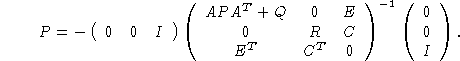
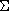
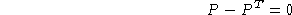
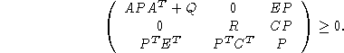

In Kalman filtering for descriptor system

where u and r are zero-mean, white Gaussian noise sequences with covariance Q and R respectively, one needs to obtain the positive solution to the descriptor Riccati equation (see [4])

It can be shown that this problem can be formulated as a  problem as follows: maximize Trace(P) under constraints

and

The evaluation function is:
function [LME,LMI,OBJ]=ric_dscr_eval(XLIST) LME=P-P' LMI=[A*P*A'+Q,zeros(A*C'),E*P;zeros(C*A'),R,C*P;P*E',P*C',P] OBJ=-trace(P)which can be used as follows (asuming E, A, C, Q and R are defined and have compatible sizes-note that E and A need not be square).
--> P_init=zeros(A'*A) --> P=lmisolver(XLIST0,ric_dscr_eval)